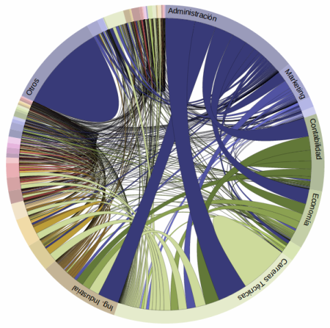

¡Empleatrón ha llegado!
Buscamos impactar positivamente en la empleabilidad de jóvenes estudiantes, así como de trabajadores en media carrera, al permitirles tener una mejor visión de lo que el mercado laboral demanda.

¡Empleatrón ha llegado!
Ponemos herramientas analíticas de última generacion a tu servicio. Trabajadores, empleadores e instituciones educativas, pueden ahora basar sus decisiones en lo que "realmente" requiere el mercado.

¡Empleatrón ha llegado!
Servimos de nexo entre la industria y las instituciones educativas, para que la oferta de profesionales esté alineada a lo que la industria solicita.